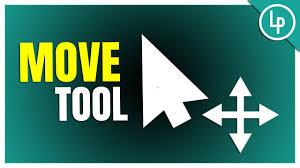
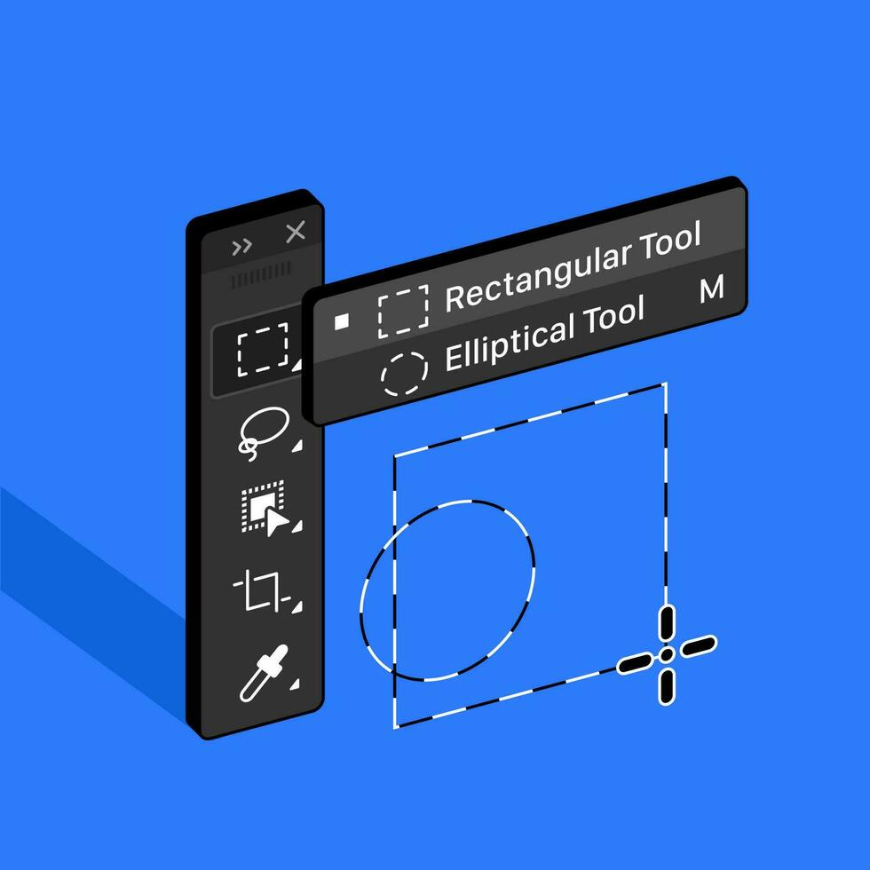
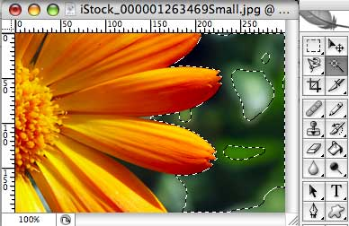
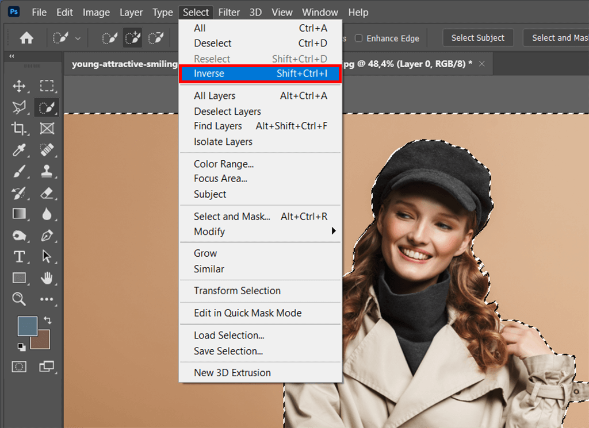
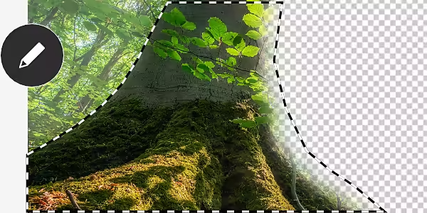

🖼️ Learn about Webpage Selection Tools Here! 🖼️
What is a Selection Tool?
A selection tool is used in image editing and design software to highlight, isolate, or manipulate specific parts of an image. With selection tools, you can move, copy, adjust, or transform selected areas without affecting the rest of the image.Selection Tools Matter Because of:
Precision – Allows you to target only the areas you want to edit.
Efficiency – Saves time by avoiding unnecessary changes.
Creativity – Opens up possibilities for combining, cutting, or blending parts of images.
Control – Gives flexibility in editing without damaging the whole image.
Types of Selection Tools

Move Tool – Used to reposition a selected area, object, or an entire layer.

Rectangular Marquee Tool – Makes rectangular or square selections in an image.

Photoshop Lasso Tool – A freehand selection tool used to draw around objects or areas in an image.

Magic Wand Tool – Selects areas of similar color with just one click.
Quick Selection Tool – Works like a brush that automatically detects and selects similar colors, textures, and edges as you drag.

Inverse Selection – Flips your current selection, selecting everything outside of it instead.

Feathering Selection – Softens the edges of a selection by creating a gradual transition between the selected area and the background.